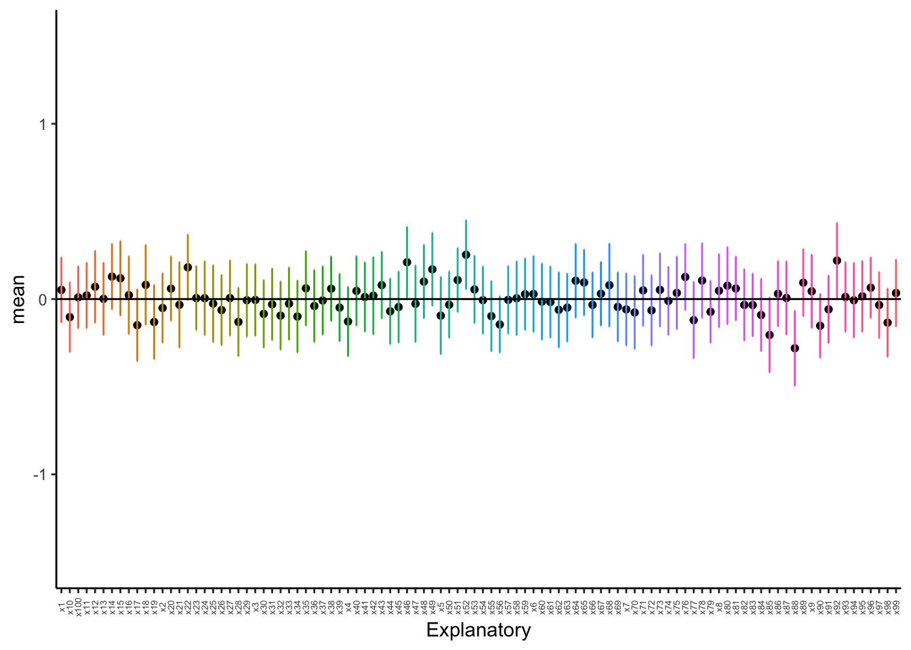
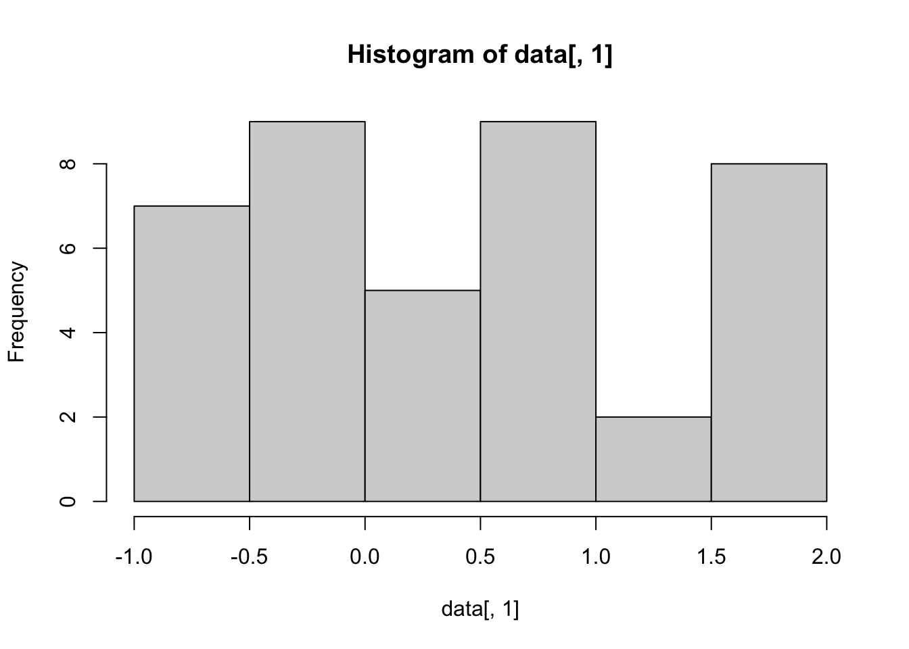

library(tidyverse)
# needed for summarizing data
library(plyr)
# needed for better Tukey tests
library(agricolae)9 ANOVA: Part 1
9.1 Introduction
When we are comparing multiple (2+) populations, we perform what is called an analysis of variance - or an ANOVA. We opt for this different method because we are trying to minimize error. As you’ll recall, we use \(\alpha\) to minimize our chances of making an error and coming to an incorrect conclusion regarding our data. In our previous tests (\(t\)-tests) we are comparing the means between two different populations, such that \(H_0: \mu_1 = \mu_2\). When comparing multiple populations, comparing the means in this direct fashion can increase the probability of introducing error into a system. Consider the following:
# This creates a reproducible example
# rnorm creates random datasets
set.seed(8675309)
for(i in 1:100){
x <- rnorm(10)
if(i == 1){
data <- x |> as.data.frame()
colnames(data) <- "Response"
data$Explanatory <- paste0("x",i)
}else{
newdat <- x |> as.data.frame()
colnames(newdat) <- "Response"
newdat$Explanatory <- paste0("x",i)
data <- rbind(data,newdat)
}
}
# summarize by group
summary_data <- ddply(data, "Explanatory", summarise,
N = length(Response),
mean = mean(Response),
sd = sd(Response),
se = sd / sqrt(N))
ggplot(summary_data, aes(x = Explanatory, y = mean, group = Explanatory)) +
geom_point() +
geom_errorbar(data = summary_data, aes(ymin = mean - 2*se, ymax = mean+2*se,
color = Explanatory), width = 0.1) +
geom_hline(yintercept = 0, col = "black", linewidth = 0.5) +
ylim(c(-1.5,1.5)) +
theme_classic() +
theme(legend.position = "none",
axis.text.x = element_text(angle = 90, vjust = 0.5, size = 5))
As we can see above, with just ten random samples and 100 sampling events, we get some datasets that do not have the mean included within the interquartile range, and thus have means that would be statistically different than what we draw. As we increase the number of draws, we get closer to the mean:
set.seed(8675309)
for(i in 1:100){
x <- rnorm(100)
if(i == 1){
data <- x |> as.data.frame()
colnames(data) <- "Response"
data$Explanatory <- paste0("x",i)
}else{
newdat <- x |> as.data.frame()
colnames(newdat) <- "Response"
newdat$Explanatory <- paste0("x",i)
data <- rbind(data,newdat)
}
}
# summarize by group
summary_data <- ddply(data, "Explanatory", summarise,
N = length(Response),
mean = mean(Response),
sd = sd(Response),
se = sd / sqrt(N))
ggplot(summary_data, aes(x = Explanatory, y = mean, group = Explanatory)) +
geom_point() +
geom_errorbar(data = summary_data, aes(ymin = mean - 2*se, ymax = mean+2*se,
color = Explanatory), width = 0.1) +
geom_hline(yintercept = 0, col = "black", linewidth = 0.5) +
ylim(c(-1.5,1.5)) +
theme_classic() +
theme(legend.position = "none",
axis.text.x = element_text(angle = 90, vjust = 0.5, size = 5))
As we can see, even with 100 sample, we still have some chances of having groups that are different! When we do pairwise comparisons, we are compounding the error and the possibility of coming to an incorrect conclusion. Thus, when comparing multiple groups, we use the variances to see if groups come from the same distribution rather than the mean.
9.2 ANOVA: By hand
For this workthrough, we will use the following example dataset:
set.seed(8675309)
for(i in 1:4){
x <- rnorm(10)
if(i == 1){
x <- rnorm(10, mean = 2)
data <- x |> as.data.frame()
colnames(data) <- "Response"
data$Explanatory <- paste0("x",i)
}else{
newdat <- x |> as.data.frame()
colnames(newdat) <- "Response"
newdat$Explanatory <- paste0("x",i)
data <- rbind(data,newdat)
}
}
# split into "typical" table
expanded_data <- NULL
expanded_data$x1 <- data$Response[which(data$Explanatory=="x1")]
expanded_data$x2 <- data$Response[which(data$Explanatory=="x2")]
expanded_data$x3 <- data$Response[which(data$Explanatory=="x3")]
expanded_data$x4 <- data$Response[which(data$Explanatory=="x4")]
expanded_data <- expanded_data |>
as.data.frame()
# summarize by group
summary_data <- ddply(data, "Explanatory", summarise,
N = length(Response),
mean = mean(Response),
sd = sd(Response),
se = sd / sqrt(N))
ggplot(summary_data, aes(x = Explanatory, y = mean, group = Explanatory)) +
geom_point() +
geom_errorbar(data = summary_data, aes(ymin = mean - 2*se, ymax = mean+2*se,
color = Explanatory), width = 0.1) +
geom_hline(yintercept = 0, col = "black", linewidth = 0.5) +
ylim(c(-3,3)) +
theme_classic() +
theme(legend.position = "none",
axis.text.x = element_text(angle = 90, vjust = 0.5, size = 5))
expanded_data |> round(2) x1 x2 x3 x4
1 0.45 1.99 0.38 -0.64
2 3.02 0.04 1.15 0.00
3 2.15 -0.40 1.57 0.05
4 1.34 -0.47 0.59 0.68
5 1.01 -0.41 -0.62 -0.25
6 3.97 0.68 -0.23 -0.15
7 1.56 0.69 0.06 -0.87
8 1.10 0.53 -0.31 -1.98
9 1.85 -0.19 -0.25 0.24
10 1.17 0.38 -0.15 0.04Above, we can see the made-up dataset where it appears as though one population differs from the other populations in our measurements. Let’s calculate an ANOVA and find out if this is the case!
NOTE throughout this process that I am trying to name variables in a straightforward fashion so as not to lose my way.
9.2.1 Calculate group means and Grand Mean
Let us assume we have a dataset, \(x\), that is \(k\) columns and \(n\) rows, with \(N\) data points in the entire data frame. We first want to take the column means for each group \(k\), such that we have \(\bar{x}_k\). We also need to find the mean of the entire dataset, \(\bar{x}_n\). We can calculate this by taking \(\frac{\Sigma x}{n}\), which we have to calculate by column as follows.
# calculate the mean of each group
# each group is in a single column
group_means <- colMeans(expanded_data)
# rounding to two decimal places
group_means |> round(2) x1 x2 x3 x4
1.76 0.28 0.22 -0.29 Next, we need to calculate the number of total entries in the dataset. We have written a function to accomplish this incase some rows have different numbers of entries from others.
n <- 0
for(i in 1:ncol(expanded_data)){
# account for unequal row length, if exists
sample <- expanded_data[,i] |>
as.numeric() |>
na.omit()
n <- n + length(sample)
}
n[1] 40Next, we can calculate the grand_mean of all of the data.
# sum up all the data
dataset_sum <- colSums(expanded_data) |>
sum()
# divide by the number of data points
grand_mean <- dataset_sum/n
# display mean
grand_mean |> round(2)[1] 0.499.2.2 Total sum of squares
To calculate the total sum of squares (TSS), we need to take the deviations (differences) of each point from the grand mean \(\bar{x}_n\), square them, and them take the sum of them.
# calculate deviates
# can calculate across all table at once
grand_deviates_squared <- (expanded_data - grand_mean)^2
# round output for here
grand_deviates_squared |> round(2) x1 x2 x3 x4
1 0.00 2.22 0.01 1.28
2 6.39 0.20 0.43 0.25
3 2.74 0.81 1.17 0.20
4 0.72 0.94 0.01 0.04
5 0.26 0.83 1.23 0.56
6 12.10 0.04 0.52 0.42
7 1.13 0.04 0.19 1.87
8 0.37 0.00 0.65 6.11
9 1.84 0.46 0.55 0.07
10 0.46 0.01 0.42 0.21# calculate the sum of all the deviates
ss_total <- rowSums(grand_deviates_squared) |>
sum()
ss_total |> round(2)[1] 47.739.2.3 Within-group sum of squares
For each data point, we need to calculate its deviation from its own group mean, squaring these deviations and then summing them together. We can’t calcualte this quite as elegantly as the aforementioned data, but we can write a function that will operate across the table and create a new dataset on our behalf.
# replicate dataset
# replace columns with deviate data
group_deviates <- expanded_data
# loop through each column
for(i in 1:ncol(group_deviates)){
# get the data in each group
dat <- group_deviates[,i]
# calculate the group mean
mu <- mean(dat)
# calculate the group deviates
dev.dat <- (dat - mu)^2
# save into table
group_deviates[,i] <- dev.dat
}
group_deviates |> round(2) x1 x2 x3 x4
1 1.72 2.90 0.02 0.12
2 1.59 0.06 0.87 0.08
3 0.15 0.47 1.84 0.11
4 0.18 0.57 0.14 0.95
5 0.57 0.49 0.70 0.00
6 4.89 0.16 0.20 0.02
7 0.04 0.16 0.02 0.34
8 0.44 0.06 0.28 2.85
9 0.01 0.22 0.22 0.28
10 0.35 0.01 0.14 0.11# calculate sum of data table
ss_within <- colSums(group_deviates) |>
sum()
ss_within |> round(2)[1] 24.339.2.4 Among-group sum of squares
The total sum of squares is equal to the among groups sum of squares and the within groups sum of squares added together; thus, we can solve this part with some easy arithmetic.
ss_among <- ss_total - ss_within
ss_among |> round(2)[1] 23.49.2.5 Calculate degrees of freedom
Our degrees of freedom for the “between” group is the number of categories minus one (\(K-1\)).
ss_among_df <- ncol(expanded_data) - 1
ss_among_df[1] 3Our degrees of freedom for the within group are the number of total samples minus the number of categories (\(N - K\)).
ss_within_df <- n - ncol(expanded_data)
ss_within_df[1] 36Our degrees of freedom for the total sum of squares is the number of samples minus one (\(N-1\)).
ss_total_df <- n - 1
ss_total_df[1] 399.2.6 Calculate mean squares
For each category (among and within), the mean square is equal to the sum of squares divided by the degrees of freedom.
ms_among <- ss_among/ss_among_df
ms_among |> round(2)[1] 7.8ms_within <- ss_within/ss_within_df
ms_within |> round(2)[1] 0.689.2.7 Get \(F\) statistic
We divide the sum of squares among data point by the sum of squares within data points to obtain our \(F\) statistic.
f_stat <- ms_among/ms_within
f_stat |> round(2)[1] 11.549.2.8 Get \(p\) value
We can use the function pf to calculate the \(p\) value for any given \(F\). Note that this function requires two different degrees of freedom to work correctly, and we are always looking right since this is a unidirectional distribution.
pf(f_stat,
df1 = ss_among_df,
df2 = ss_within_df,
lower.tail = F)[1] 1.894073e-05Given how small our \(p\) value is, we want to round this to \(p<0.0001\). As we can see, it is very unlikely that these are the same population.
9.3 ANOVA: By R
For this, we need to use the dataframe where we have all data in a single column and all ID’s in the other columns. We then show how we want the ANOVA to operate across the data using the ~ symbol.
data_aov <- aov(Response ~ Explanatory, data = data)
summary(data_aov) Df Sum Sq Mean Sq F value Pr(>F)
Explanatory 3 23.40 7.801 11.54 1.89e-05 ***
Residuals 36 24.33 0.676
---
Signif. codes: 0 '***' 0.001 '**' 0.01 '*' 0.05 '.' 0.1 ' ' 1As we can see, all these values match what we did by hand above!
9.4 Post-hoc Tukey test
ANOVA tells us if a test is different, but it doesn’t tell us which test is different. To do this, we have to perform a Tukey test.
9.4.1 Tukey test by hand
To do this by hand, we will need a lot of data from our aforementioned ANOVA test.
We need to calculate pairwise differences between each set of means.
x1_mean <- mean(data$Response[data$Explanatory == "x1"])
x2_mean <- mean(data$Response[data$Explanatory == "x2"])
x3_mean <- mean(data$Response[data$Explanatory == "x3"])
x4_mean <- mean(data$Response[data$Explanatory == "x4"])
group_means <- c(x1_mean, x2_mean, x3_mean, x4_mean)
# calculate all pairwise differences
pairwise_mean_diffs <- dist(group_means)
pairwise_mean_diffs |> round(2) 1 2 3
2 1.48
3 1.54 0.06
4 2.05 0.57 0.51Next, we need a critical \(Q\) value against which we can compare. For Tukey, our degrees of freedom are the same as the degrees of freedom for \(SS_{within}\): \(N - K\).
# set p value
tukey_q <- qtukey(p = 0.95,
# get length of categories / columns
nmeans = ncol(expanded_data),
df = ss_within_df)
tukey_q |> round(2)[1] 3.81We need to multiply \(Q\) by the pooled variance.This is the same as the average of the variances for each group.
var_data <- 0
# calculate pooled variance
for(i in 1:ncol(expanded_data)){
var_data <- var_data + var(expanded_data[,i])
}
pooled_var_dat <- sqrt(var_data/n)
pooled_var_dat |> round(2)[1] 0.26We can calculate the Tukey critical value by multiplying the pooled variance by \(Q\).
tukey_critical <- tukey_q*pooled_var_dat
tukey_critical |> round(2)[1] 0.99Remember, we are comparing to the actual value, not the rounded value.
Which mean differences are difference compared to our critical value?
pairwise_mean_diffs[pairwise_mean_diffs < tukey_critical] <- 0
pairwise_mean_diffs 1 2 3
2 1.477866
3 1.542282 0.000000
4 2.051068 0.000000 0.000000As we can see above, three differences cross our threshold - all associated with x1.
When we graph things, we want to label this group as different. We will cover this a little later in the tutorial.
9.4.2 Tukey test in R
Tukey tests in the R program are a bit more straightforward.
TukeyHSD(data_aov) Tukey multiple comparisons of means
95% family-wise confidence level
Fit: aov(formula = Response ~ Explanatory, data = data)
$Explanatory
diff lwr upr p adj
x2-x1 -1.47786579 -2.468021 -0.4877106 0.0015554
x3-x1 -1.54228164 -2.532437 -0.5521265 0.0009388
x4-x1 -2.05106768 -3.041223 -1.0609125 0.0000147
x3-x2 -0.06441585 -1.054571 0.9257393 0.9980525
x4-x2 -0.57320189 -1.563357 0.4169533 0.4141599
x4-x3 -0.50878604 -1.498941 0.4813691 0.5173399As we can see above, only three comparisons have a p value of \(< 0.05\), and thus only those three are significantly different. All involve x1.
We can also use HSD.test to get more specific results:
tukey_data_aov <- HSD.test(data_aov,
# what to group by?
"Explanatory",
# significance level?
alpha = 0.05,
# are data unbalanced
unbalanced = FALSE,
# show answer?
console = TRUE)
Study: data_aov ~ "Explanatory"
HSD Test for Response
Mean Square Error: 0.6758192
Explanatory, means
Response std r se Min Max Q25 Q50
x1 1.7620153 1.0505466 10 0.2599652 0.4504476 3.972459 1.1175485 1.44911720
x2 0.2841495 0.7532422 10 0.2599652 -0.4729986 1.985826 -0.3497379 0.21347543
x3 0.2197337 0.7019368 10 0.2599652 -0.6150452 1.574903 -0.2436023 -0.04493909
x4 -0.2890524 0.7345336 10 0.2599652 -1.9769014 0.684072 -0.5394534 -0.07741642
Q75
x1 2.07491533
x2 0.64579865
x3 0.53544151
x4 0.04323417
Alpha: 0.05 ; DF Error: 36
Critical Value of Studentized Range: 3.808798
Minimun Significant Difference: 0.9901551
Treatments with the same letter are not significantly different.
Response groups
x1 1.7620153 a
x2 0.2841495 b
x3 0.2197337 b
x4 -0.2890524 bprint(tukey_data_aov)$statistics
MSerror Df Mean CV MSD
0.6758192 36 0.4942115 166.3422 0.9901551
$parameters
test name.t ntr StudentizedRange alpha
Tukey Explanatory 4 3.808798 0.05
$means
Response std r se Min Max Q25 Q50
x1 1.7620153 1.0505466 10 0.2599652 0.4504476 3.972459 1.1175485 1.44911720
x2 0.2841495 0.7532422 10 0.2599652 -0.4729986 1.985826 -0.3497379 0.21347543
x3 0.2197337 0.7019368 10 0.2599652 -0.6150452 1.574903 -0.2436023 -0.04493909
x4 -0.2890524 0.7345336 10 0.2599652 -1.9769014 0.684072 -0.5394534 -0.07741642
Q75
x1 2.07491533
x2 0.64579865
x3 0.53544151
x4 0.04323417
$comparison
NULL
$groups
Response groups
x1 1.7620153 a
x2 0.2841495 b
x3 0.2197337 b
x4 -0.2890524 b
attr(,"class")
[1] "group"This output is nice because it labels groups based on which groups belong together! This will be important for plotting, and is cumbersome if you have a lot of means.
9.5 Plotting our ANOVA results
When we plot our ANOVAs, we want to show which mean is different from all of the others. Below, I will show the full pipeline for performing an ANOVA on a dataset and plotting the data at the end using out data object.
data_aov <- aov(Response ~ Explanatory,data)
summary(data_aov) Df Sum Sq Mean Sq F value Pr(>F)
Explanatory 3 23.40 7.801 11.54 1.89e-05 ***
Residuals 36 24.33 0.676
---
Signif. codes: 0 '***' 0.001 '**' 0.01 '*' 0.05 '.' 0.1 ' ' 1Now, we need to summarize things based on our plyr function.
# summarize by group
summary_data <- ddply(data, "Explanatory", summarise,
N = length(Response),
mean = mean(Response),
sd = sd(Response),
se = sd / sqrt(N))Now, we can use the aforementioned Tukey results to assign to groups. Because agricolae functions define the groups in a $groups slot, we can pull out these data and perform some minimal transformations to make them ready to plot. This will save us a lot of time and hassle.
# note first group must be EXACT MATCH to your summary_data object
# groups are saved in the Tukey object
# this is true for Tukey later as well
# the following is a function that will make the significant label table
sig.label.maker <- function(tukey_test, group_name){
sig.labels <- tukey_test$groups |>
# convert to a data.frame
as.data.frame() |>
# create a new column - place rownames into the column
# converts to a format better for ggplot
mutate(Explanatorys = rownames(tukey_test$groups)) |>
# rename column to prevent confusion
# specify dplyr; default function may be from plyr and not work
dplyr::rename(significance = groups)
colnames(sig.labels)[which(colnames(sig.labels) == "Explanatorys")] <- group_name
return(sig.labels)
}
# pull out the groups slot from tukey
# same for Kruskal later on!
sig.labels <- sig.label.maker(tukey_data_aov, "Explanatory")
sig.labels Response significance Explanatory
x1 1.7620153 a x1
x2 0.2841495 b x2
x3 0.2197337 b x3
x4 -0.2890524 b x4Note that in the above, the row labels and the column Explanatory are identical. We moved these data into a column to make it easier to use ggplot. If you want letters to be different - capitalized or something else - you will have to do this yourself. Now we can plot our data and add the labels!
ggplot(summary_data, # plot summary data
# Define plotting - x by group, y is mean, grouping by group
aes(x = Explanatory, y = mean, group = Explanatory)) +
# add points to plot for y values
geom_point() +
# add error bars around points
geom_errorbar(data = summary_data,
# define error bars
aes(ymin = mean - 2*se, ymax = mean+2*se,
# define color, size
color = Explanatory), width = 0.1) +
# add line at average for the main group
# this is not always known - nor requires!
geom_hline(yintercept = 0, col = "black", linewidth = 0.5) +
# set vertical limits for plot
ylim(c(-3,3)) +
# make it a classic theme - more legible
theme_classic() +
# add text to plot
geom_text(data = sig.labels,
# make bold
fontface = "bold",
# define where labels should go
aes(x = Explanatory,
# define height of label
y = -2,
# what are the labels?
label = paste0(significance))) +
xlab("Explanatory Name") +
ylab("Mean") +
# remove legend - not needed here
theme(legend.position = "none",
# make label text vertical, easier to read
axis.text.x = element_text(angle = 90,
# vertical offset of text
vjust = 0.5,
# text size
size = 12))
Note that I place the labels below here, but they could also be placed above. You have to position them based on your own judgment.
Addendum: if you see a mean labeled a and b, it would be statistically indistinguishable from means labeled a and means labeled b, despite means with only an a or a b being different from each other.
9.6 Kruskal-Wallis tests
The Kruskal-Wallis test is the non-parametric version of an ANOVA. To demonstrate this, we will be creating a non-normal distribution by pulling random values from a uniform distribution, using the random uniform function runif. Note we are rounding the data here to make it more similar to non-normal datasets you may encounter, and to increase the probability of ties.
set.seed(8675309)
for(i in 1:4){
x <- runif(10, min = -1, max = 1) |>
round(2)
if(i == 1){
x <- runif(10, min = 1, max = 2) |>
round(2)
data <- x |> as.data.frame()
colnames(data) <- "Response"
data$Explanatory <- paste0("x",i)
}else{
newdat <- x |> as.data.frame()
colnames(newdat) <- "Response"
newdat$Explanatory <- paste0("x",i)
data <- rbind(data,newdat)
}
}
# split into "typical" table
expanded_data <- NULL
expanded_data$x1 <- data$Response[which(data$Explanatory=="x1")]
expanded_data$x2 <- data$Response[which(data$Explanatory=="x2")]
expanded_data$x3 <- data$Response[which(data$Explanatory=="x3")]
expanded_data$x4 <- data$Response[which(data$Explanatory=="x4")]
expanded_data <- expanded_data |>
as.data.frame()
# summarize by group
summary_data <- ddply(data, "Explanatory", summarise,
N = length(Response),
mean = mean(Response),
sd = sd(Response),
se = sd / sqrt(N))
ggplot(summary_data, aes(x = Explanatory, y = mean, group = Explanatory)) +
geom_point() +
geom_errorbar(data = summary_data, aes(ymin = mean - 2*se, ymax = mean+2*se,
color = Explanatory), width = 0.1) +
geom_hline(yintercept = 0, col = "black", linewidth = 0.5) +
ylim(c(-3,3)) +
theme_classic() +
theme(legend.position = "none",
axis.text.x = element_text(angle = 90, vjust = 0.5, size = 5))
We can confirm these data are non-normal with Shapiro-Wilk tests and histograms. Demonstrating with the first column only:
hist(data[,1])
shapiro.test(data[,1])
Shapiro-Wilk normality test
data: data[, 1]
W = 0.93404, p-value = 0.02187The above histogram appears non-normal, and the Shapiro-Wilk also indicates this is non-normal.
9.6.1 By hand
First, we need to order all the data in the entire dataset. This is easiest to do if we use the dataset with all data in a single column.
data$ranks <- rank(data$Response, ties.method = "average")
# view first couple of rows
head(data) Response Explanatory ranks
1 1.84 x1 39
2 1.58 x1 34
3 1.51 x1 33
4 1.26 x1 32
5 1.75 x1 37
6 1.92 x1 40Now, we need to calculate the sum of the ranks for each category. The below function will take the sum of the ranks for the rows which match the condition of having the group be x1.
x1_sum <- sum(data$ranks[which(data$Explanatory=="x1")])
x2_sum <- sum(data$ranks[which(data$Explanatory=="x2")])
x3_sum <- sum(data$ranks[which(data$Explanatory=="x3")])
x4_sum <- sum(data$ranks[which(data$Explanatory=="x4")])Now, we need to calculate our test statistic. The test statistic is \(H\), with: \[H = \frac{12}{N(N+1)} \cdot \Sigma \frac{R_j^2}{n_j}-3(N+1)\]In this equation, \(R\) is the sum of the ranks for a given category. This follows a \(\chi^2\) distribution with \(k-1\) degrees of freedom, with \(k\) referring to categories.
For these, we need to know what \(n\) is for each category.
n1 <- length(data$ranks[which(data$Explanatory=="x1")])
n2 <- length(data$ranks[which(data$Explanatory=="x2")])
n3 <- length(data$ranks[which(data$Explanatory=="x3")])
n4 <- length(data$ranks[which(data$Explanatory=="x4")])Next, we can calculate the sums of the \(\frac{R^2}{n}\) term.
r2_sum <- sum(x1_sum^2/n,
x2_sum^2,n,
x3_sum^2/n,
x4_sum^2/n)Now, we can calculate \(H\).
N <- sum(n1, n2, n3, n4)
H <- ((12/(N*(N+1)))*r2_sum)-(3*(N+1))
H |> round(2)[1] 57.43Now, we can evaluate this with a \(\chi^2\) \(p\) value.
pchisq(q = H,
df = ncol(data)-1,
# remember, looking right!
lower.tail = FALSE)[1] 3.382831e-13As we can see, the probability is extremely low with \(p < 0.0001\). One distribution is different, and we can proceed with Tukey tests.
9.6.2 Using R
We can also use R for this test.
kruskal_data <- kruskal.test(Response ~ Explanatory, data)
print(kruskal_data)
Kruskal-Wallis rank sum test
data: Response by Explanatory
Kruskal-Wallis chi-squared = 22.149, df = 3, p-value = 6.073e-05This test is similar, but not quite the same, as what we calculated above. The package agricolae provides a more in-depth Kruskal-Wallis test that gives us more metadata. We have to use the wrapper with to get this to work properly, per the help page.
# use "with", defining your dataset first
data_kruskal <- with(data,
# define parameters for Kruskal-Wallis test
# First, variable of interest
kruskal(Response,
# second, grouping variable
Explanatory,
# do you want group designations returned?
group = TRUE,
# what is this being done on?
# must match dataset name in "with"!!!
main = "data"))
# display results
# summary WILL NOT show the right thing
print(data_kruskal)$statistics
Chisq Df p.chisq t.value MSD
22.14917 3 6.07312e-05 2.028094 7.252228
$parameters
test p.ajusted name.t ntr alpha
Kruskal-Wallis none Explanatory 4 0.05
$means
Response rank std r Min Max Q25 Q50 Q75
x1 1.633 35.50 0.2415252 10 1.21 1.92 1.5275 1.720 1.8025
x2 -0.075 14.20 0.6424130 10 -0.88 0.69 -0.6325 -0.105 0.5575
x3 0.020 16.15 0.5327080 10 -0.63 0.95 -0.3250 -0.110 0.3775
x4 0.045 16.15 0.6774011 10 -0.92 0.95 -0.3500 -0.135 0.6475
$comparison
NULL
$groups
Response groups
x1 35.50 a
x3 16.15 b
x4 16.15 b
x2 14.20 b
attr(,"class")
[1] "group"As we can see, the above gives us our group designations under the $group section. This is what we need to be able to plot things, as with ANOVA above. I do not repeat those steps here.
9.7 Homework: Chapter 11
Your homework is to complete problems 11.1, 11.2, 11.3, and 11.4. The first two will require ANOVA, and the last two will require Kruskal-Wallis tests. For each pair of tests, you must also complete the problem by hand in addition to using the default R methods. For all problems:
- State your hypothesis in words
- State your hypothesis mathematically (hint: \(\mu\))
- Answer in complete sentences and don’t forget to round your answers.
- If you reject the null hypothesis, you must plot the results and label them to show which means are different.